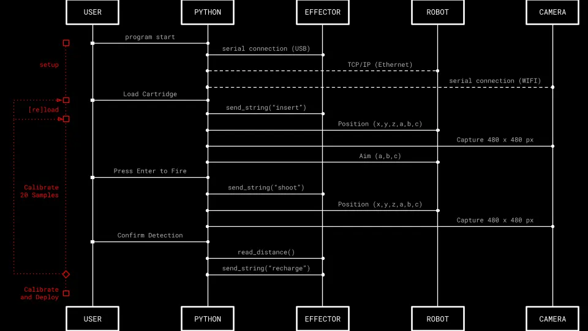

research
Robot Based Remote Material Deposition

- context
- ITECH
- year
- 2025
- type
- research
The aim of this research is to explore the concept of remote material deposition for construction. Following the research of ETH Zurich’s remote material deposition project using a predictable parabolic catapult, this research attempts to attempt a similar method on flat walls with more unpredictability. The unpredictability was calculated and compensated for using a calibration sequence to fit a polynomial regression function to determine a more accurate deposition angle.


